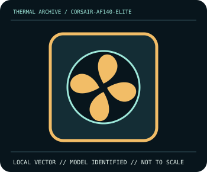

[ INDIVIDUAL COMPONENT // COOLING ]
Corsair AF140 ELITE
140×25 mm, 400–1600 RPM, up to 84.5 CFM/1.73 mm H₂O.

IDENTIFICATION: Match complete model, suffix, revision and bundle before installation. Related variants can differ in dimensions, brackets, wiring, connector, and operating limits.
Manufacturer specifications
| Catalog subcategory | Case And Radiator Fans |
|---|---|
| Exact model | Corsair AF140 ELITE |
| Published specifications | 140×25 mm, 400–1600 RPM, up to 84.5 CFM/1.73 mm H₂O. |
| Compatibility and mounting | 140 mm fit; distinct from AF120 ELITE. Verify exact color/SKU. |
| Connector and electrical limitations | 12 V 4-pin PWM, 0.3 A; no RGB. |
Safe installation and maintenance
Disconnect power and hold the rotor still during dusting; do not overspin with compressed air. Verify the host pinout, fan direction, current rating and tach behavior before substitution.
- Follow the exact manufacturer manual for this model and host; do not interchange similar-looking parts or hardware.
- After service, verify pump/fan operation and temperature behavior under monitored conditions before normal workload.
Manufacturer source
- www.corsair.com — Corsair AF140 ELITE product informationManufacturer specifications; verify current revision-specific manual and compatibility details before installation.
This static catalog entry is an identification aid, not a compatibility guarantee; ratings can vary by revision or SKU.